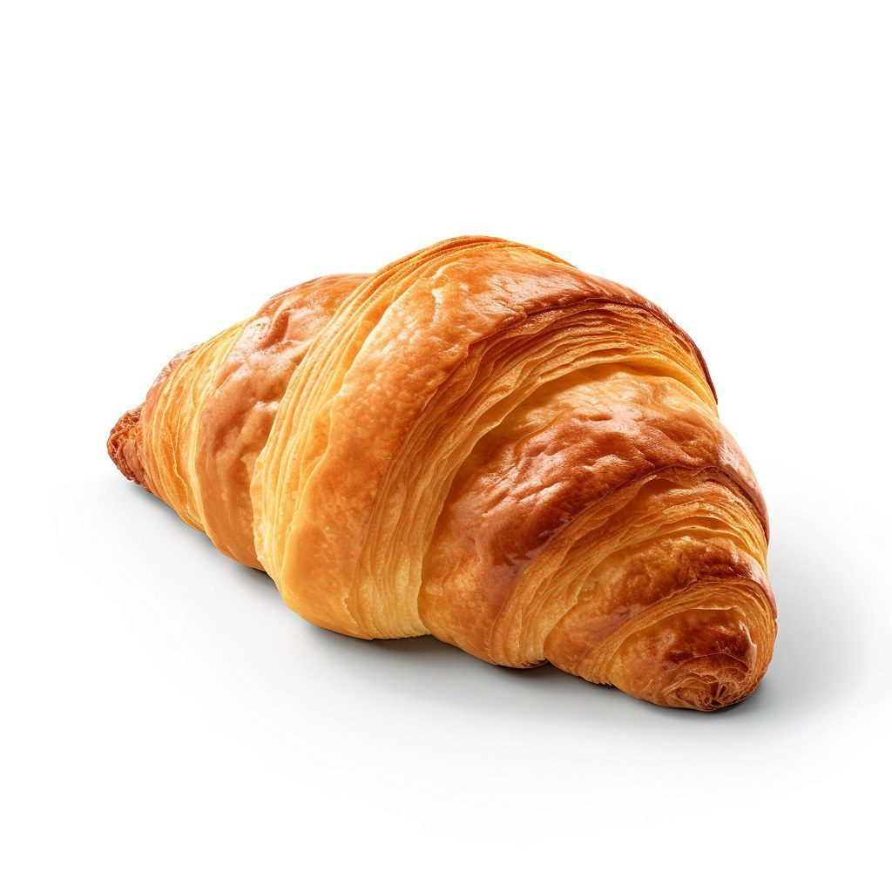
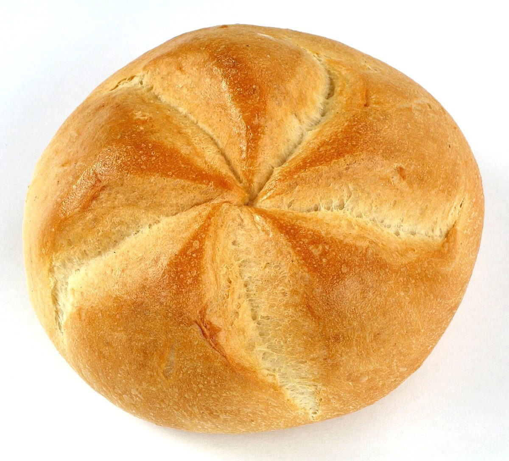
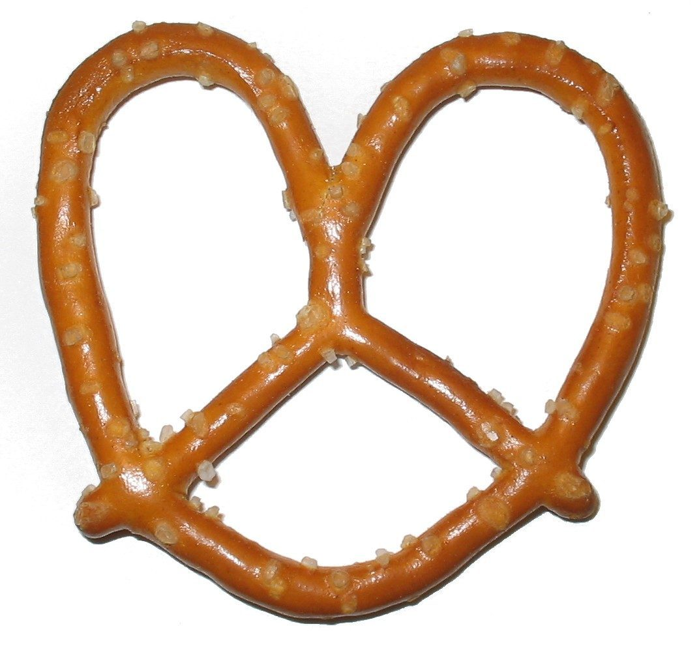
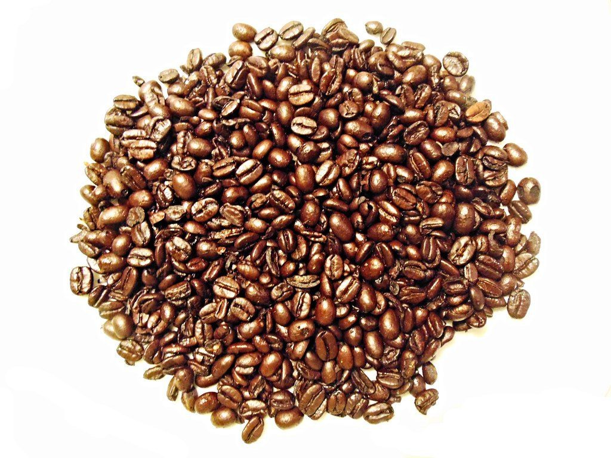

PARTS LAYOUT / 部位の配置図
自立式サイネージ部位
配置図
商業施設の通路や店先に立っている、縦長の電子看板。ブレッド ツクネの試作ページは、その部位を6つに分けて並べた「配置図」の体裁でつくりました。
※ 自立式サイネージは制作側の連想によるモチーフで、お店の理念・由来とは無関係です。
●部位の一覧
- ①表示パネル
映像や案内を映す大きな面。通行する人の目線に向けて、縦長に据えられる。
- ②縁取り枠
表示パネルをぐるりと囲む枠。内側の画面と外の空間の境目になる。
- ③ポール
パネルを持ち上げる縦の柱。中を配線が通る型が多い。
- ④台座
床に置く重たい土台。自立させるため、広く平らにつくられる。
- ⑤配線カバー
電源などのケーブルを覆う細いカバー。ポールの背に沿って伸びる。
- ⑥通気スリット
パネルの裏側から熱を逃がす細い切れ込み。長い時間つけっぱなしにする機器に付く。
●イメージ写真
以下は、パネルに映す画像のように並べた、フリー素材のイメージ写真です。




●ご案内
営業時間・定休日・メニュー・価格・駐車場・ご予約などは準備中です。確認できている情報は、所在地とInstagramのみです。